Foundation + projection
DONE60Hz fixed-step loop, action-named input with edge detection, seeded RNG, road-space projection with per-row surface scan, sprite + footprint registry, capture harness, procedural soundtrack.
Deliver the rumors. Dodge the drama. Pick up Bomba. An original arcade game: Federico drives a site buggy along an angled jobsite route throwing gossip at scaffold crews, while the rumor mutates on its way to Bomba.
PLAY — crizpy7-sketch.github.io/rumor-run60Hz fixed-step loop, action-named input with edge detection, seeded RNG, road-space projection with per-row surface scan, sprite + footprint registry, capture harness, procedural soundtrack.
Hand-authored pixel art: ground, buggy with steer and wreck frames, cast, the obstacle catalogue, targets, fx, UI chrome, plus a 5x7 font shared with this page.
ROUND 1Speed-scaled steering authority, roll-on throttle, off-road drag, crash and recover with invulnerability, two-sided throwing plus a nearest-target assist, sheets on a real ballistic arc.
ROUND 1Twelve hazard kinds across six harm types, 30-frame telegraphing on everything that moves, near-miss detection, four target kinds with hit-quality tiers, 80+ barks.
ROUND 1Eight themed shifts, deterministic route generation from a seed, escalating hazard mix and speed caps, the rumour chain threaded through all of them.
ROUND 1Quality x combo scoring, near misses, nine upgrades offered three at a time, HUD, brief/results/stores screens, and the far-gate ending that replays the whole chain.
ROUND 1Static server, screenshot tour, this page, a browser-free verifier over the shipped data, an autopilot that plays all eight shifts, and CI running the lot on every push.
ROUND 2Every shift, played end to end by tools/bot.js. A shift the bot cannot clear is a bug, not a difficulty setting.
| # | Shift | Delivered | Bull | Solid | Whisper | Crashes | Combo | Score | |
|---|---|---|---|---|---|---|---|---|---|
| L1 | MORNING GATE | 17/6 | 9 | 5 | 3 | 0 | x9 | 4463 | PASS |
| L2 | SPOIL HEAP | 19/8 | 9 | 10 | 0 | 3 | x9 | 5294 | PASS |
| L3 | MIXER ALLEY | 16/9 | 8 | 6 | 2 | 4 | x7 | 5820 | PASS |
| L4 | THE WET POUR | 21/10 | 11 | 9 | 1 | 0 | x8 | 9928 | PASS |
| L5 | FORKLIFT CROSSING | 25/11 | 17 | 7 | 1 | 4 | x6 | 12549 | PASS |
| L6 | SCAFFOLD ROW | 28/12 | 15 | 10 | 3 | 10 | x10 | 13265 | PASS |
| L7 | NIGHT POUR | 32/13 | 19 | 10 | 3 | 10 | x7 | 12069 | PASS |
| L8 | THE LONG GATE | 30/14 | 13 | 14 | 3 | 11 | x10 | 13796 | PASS |
drive — The throw gate tested `buggy.cooldown <= 0`, but the field was never initialised, so the comparison was `undefined <= 0` — false forever. Every throw in the game was silently swallowed. The first capture tour caught it: sheets never appeared and the delivery counter stayed on zero through a full route.
levels — Targets were placed 10.1-12.1 m off the centre line against a base throw range of 8 m, so most deliveries were geometrically impossible even with the buggy hugging the kerb. Crews moved in to 9.3-10.9 m and the base range went to 10 m, which makes the near side comfortable and the far side a decision.
meta — Hit quality was measured where the sheet happened to be on the frame contact was detected — which is always the edge of the hitbox — so the autopilot landed 15 deliveries in a row and every one of them graded as the worst tier. Quality now comes from the throw's closest approach to the crew, solved from the sheet's velocity. Bullseyes went from 0 per shift to 11.
hazards — Crews on scaffolds had a hitbox starting 2.4 m up while a sheet's arc peaked at 1.76 m. Every scaffold delivery from level 5 onward was geometrically impossible. The arc now peaks at 2.09 m and the scaffold hitbox starts at 1.6 m, so reaching one means getting closer than you would for a crew on the ground — a real distinction instead of an impossible one.
levels — Route generation could place solid hazards across the full paved width with no gap to thread, and could bury a crew's approach behind them. On one seed the autopilot failed the same shift three times with eight crashes a run, while another seed of the same shift cleared 20 of 20. Generation now runs a fairness pass: hazards that would leave less than 2.8 m of clean surface are dropped, and the outer half of a crew's own side is cleared for the 13 m run-up.
meta — HIGH LOB raises the throw arc, and a raised arc sails clean over a crew whose catch window has a low ceiling. Taking it meant every ground delivery for the rest of the run passed above every crew's head: the autopilot threw 19 sheets on a shift and landed none of them. Because upgrade offers are random, it only reproduced in some sessions. Ground crews now have a catch window tall enough to take a lob, HIGH LOB is capped at one copy, and the playtest deliberately takes the most disruptive upgrade on offer rather than whatever the cursor was on.
levels — The first version of the drivable-line pass checked each hazard only against those already placed behind it, so a hazard that was fine against its predecessors and fine against its successors could still be lethal with both at once. The verifier asserts the property from both directions and found 13 walled-off routes across 64 seeds. Generation now repairs until the property actually holds, dropping whichever member of the tightest wall opens it up most.
meta — The combo held for 2.6 s while crews sit about three seconds apart at cruise, so the meter reset between every delivery and never passed x2. Raised to 4.2 s: a clean shift now runs to x14.
foundation — Drawing the surface as one axis-aligned rect per metre stairsteps the diagonal edges. The projection is instead inverted per screen row, so the road centre on row y is a closed form and the edges land on exact positions. Designed in from the start and documented in road.js rather than discovered late.
Every screen the game has, captured from the real running build by tools/shoot.mjs: attract loop, brief, the route, a crash, results, the stores, and the payoff at the far gate.
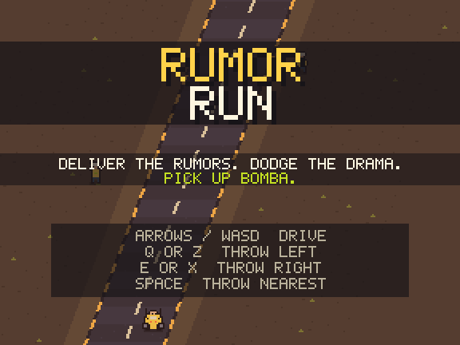
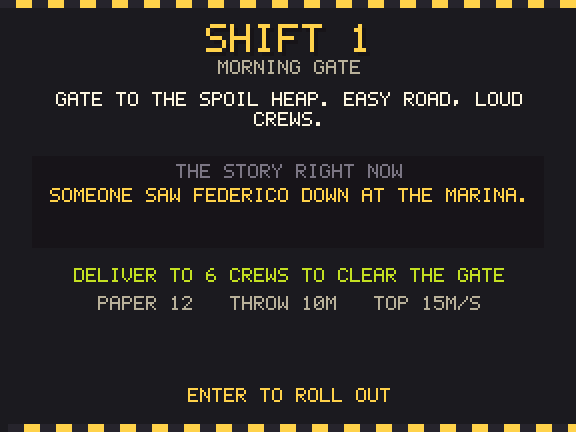
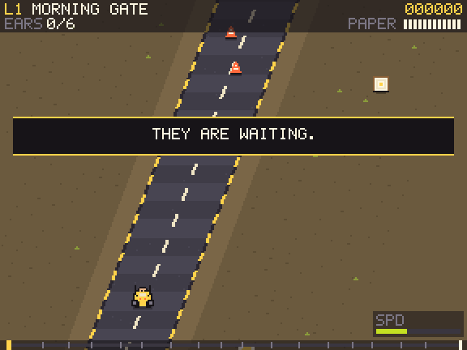
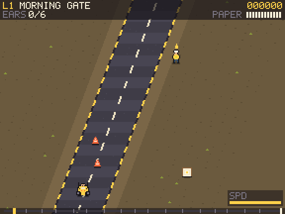
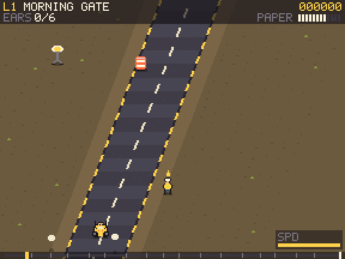
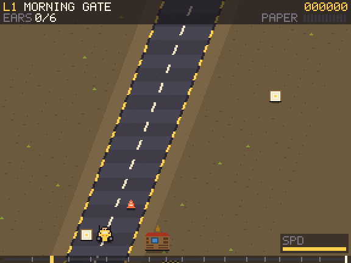
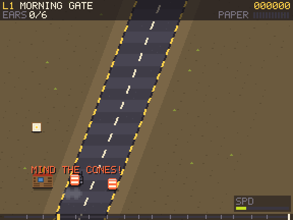
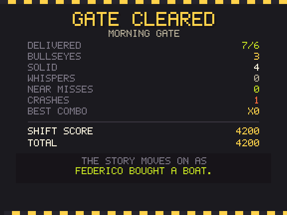
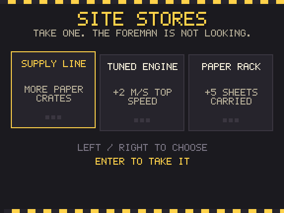
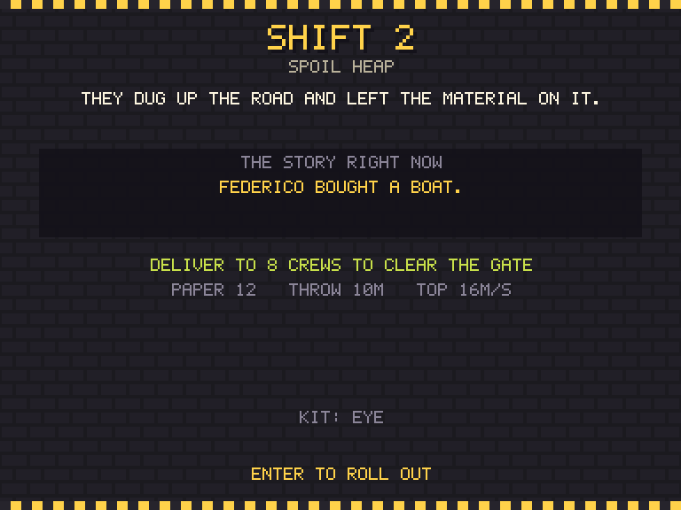
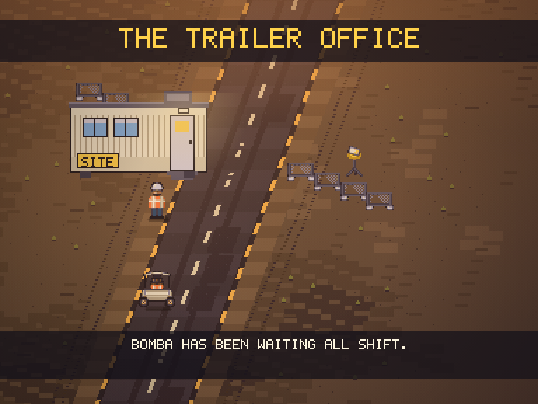
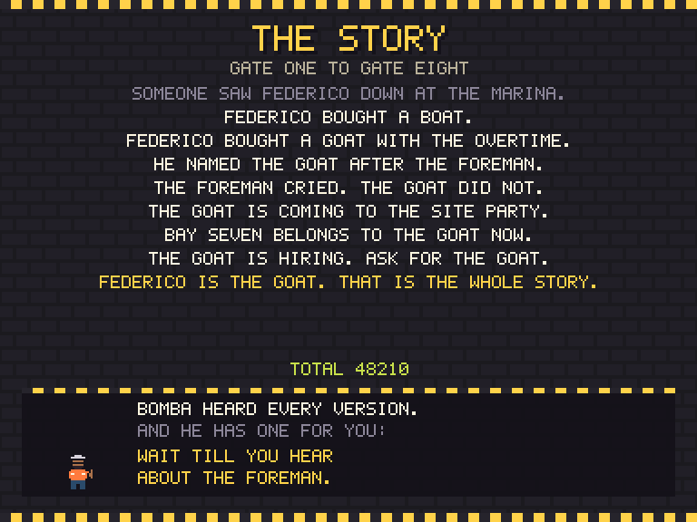
60Hz engine, input remapped for driving and two-sided throwing, and 288x216 because a 4:3 screen gives an angled route the vertical room it needs to telegraph hazards.
CONTRACTS.md fixed ownership, the feel targets a critic can measure, and the humour rules. art/names.js pins every sprite name AND its road-space hitbox, so gameplay and art can never disagree about how big a thing is.
Art, driving, hazards and targets, the eight routes, and the scoring and payoff, each verified against the real running game rather than against intent.
tools/bot.js drives every shift to the far gate. It caught the throw range mismatch immediately and now guards against any tuning change that makes a shift unclearable.
A browser-free verifier over the shipped data, CI running verify + playtest + capture on every push, and a Pages workflow so the play link is real. The verifier immediately found a hole in the route fairness pass and, once pointed at throw geometry, the upgrade that broke every ground delivery.